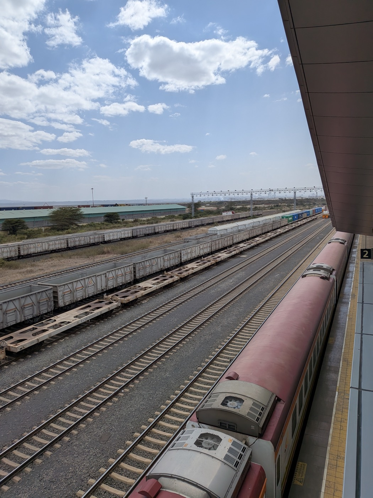
Home ✦ Gallery
Proof it happened
No stock-photo fantasies here — these are real snapshots from recent Feels Timeless trips: giraffe breakfasts in Nairobi, dhow cruises on the Indian Ocean, villa mornings and long city walks. Tap any photo to view it large.
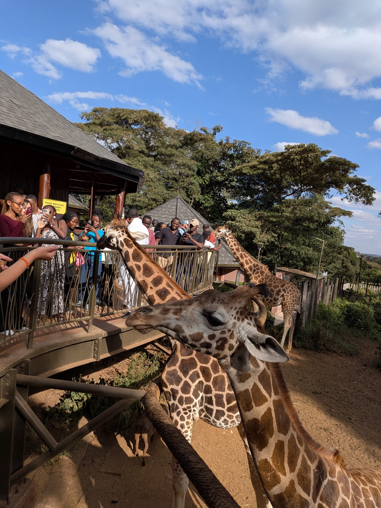
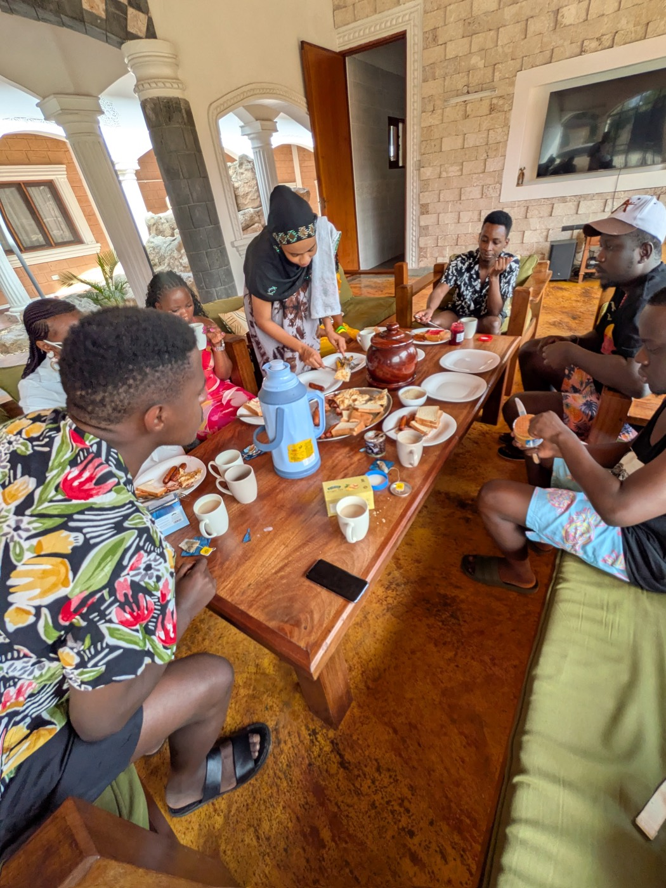
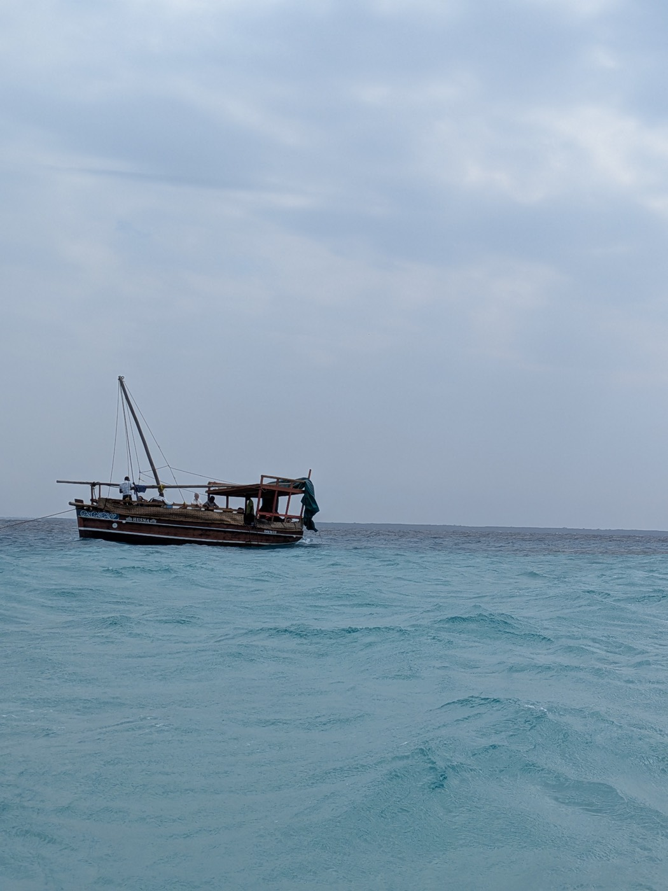
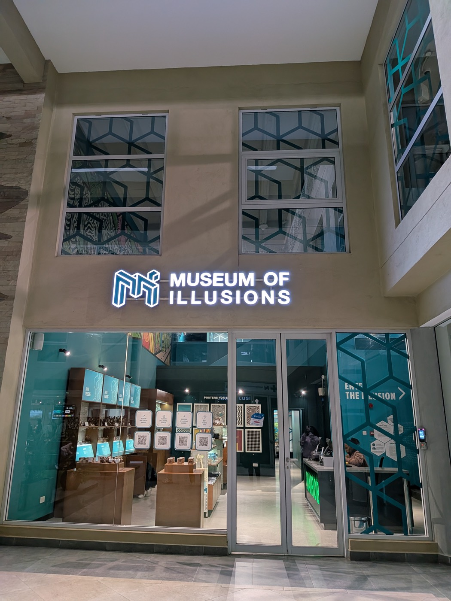
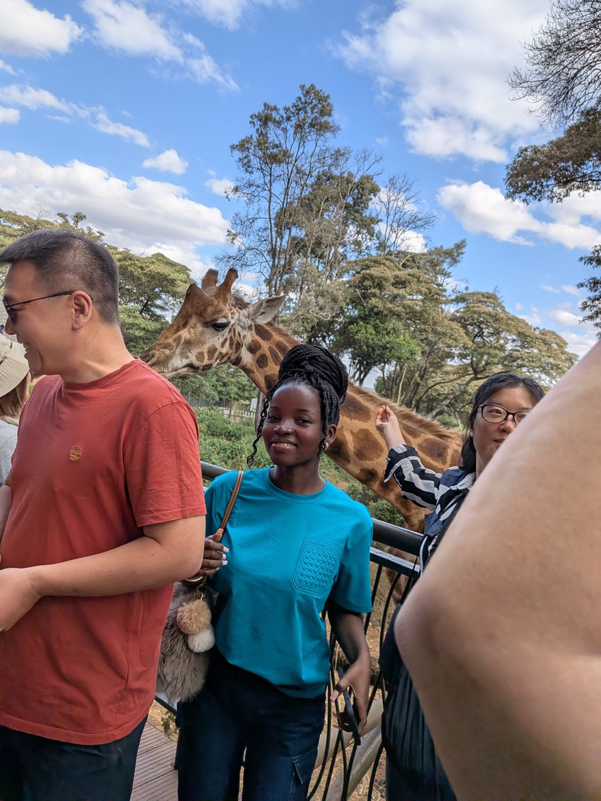
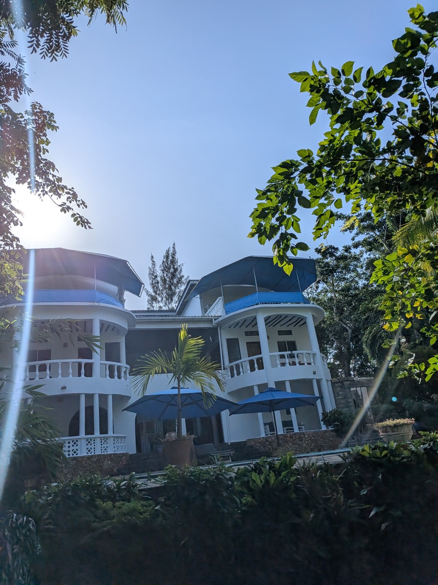
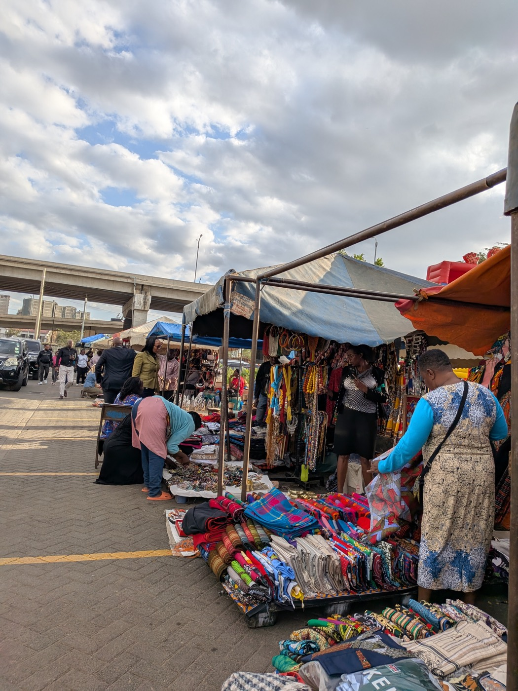
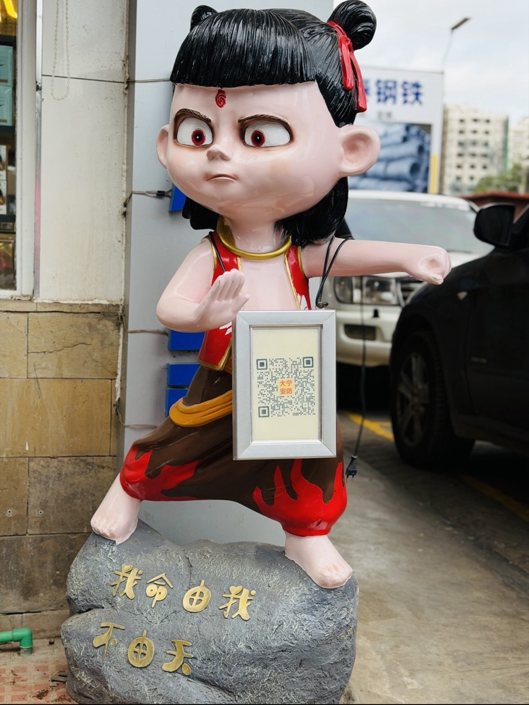
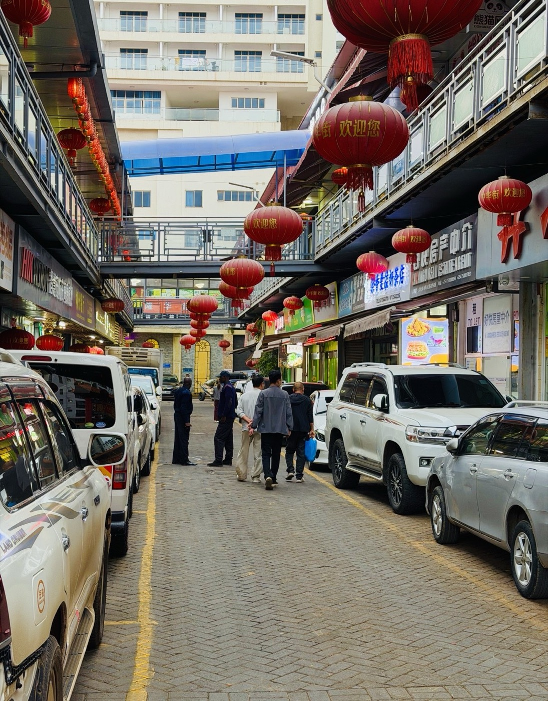

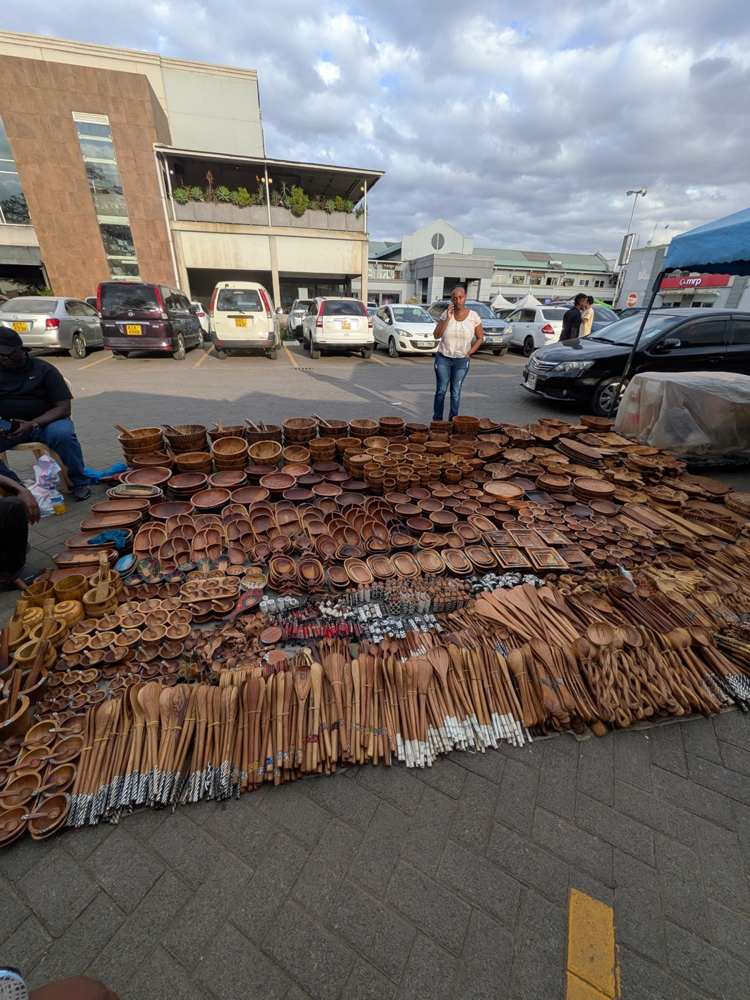
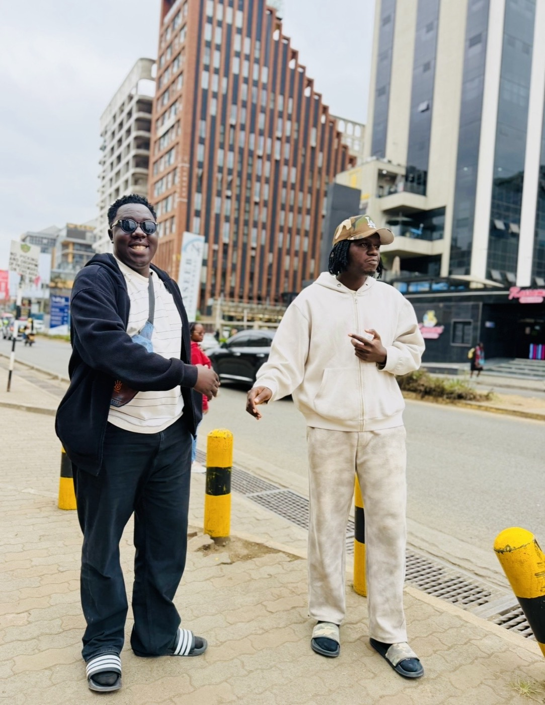
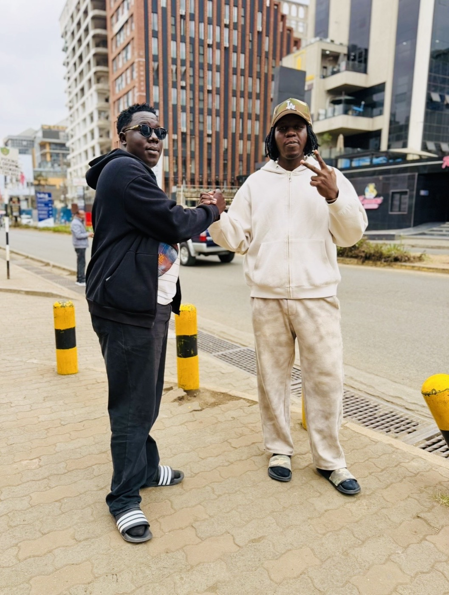

Your photos belong on this page.
Book a trip, live it fully, and send us your favourite shot — we feature traveler photos every month.
Plan my trip